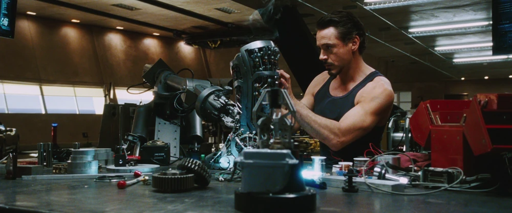

Tony Stark, genius billionaire weapons manufacturer, is captured by the Ten Rings in Afghanistan. In a cave, with nothing but scraps, he builds the Mark I armor and escapes. Returning home, he perfects his design into the Mark II and Mark III, shuts down Stark Industries' weapons division, and battles Obadiah Stane's Iron Monger. He ends the film with four words that changed everything: "I am Iron Man."

Jericho Missile Demonstration
Tony Stark demonstrates the Jericho missile to military officials in Afghanistan, showcasing Stark Industries' most powerful weapon—moments before the ambush that changes his life forever.

Constructing the Mark I in Captivity
Working in secret inside a cave with Dr. Ho Yinsen, Tony constructs a crude but powerful suit of armor from salvaged missile components to engineer his escape.

Pepper Replaces Chest Arc Reactor
Back home, Pepper Potts assists Tony in replacing his makeshift cave Arc Reactor with a more refined unit, marking a deep moment of trust between them.

Building the Mark II in Malibu Lab
In his high-tech Malibu workshop, Tony designs and builds the sleek, silver Mark II armor, preparing for flight tests with J.A.R.V.I.S.'s assistance.

Suiting Up — Mark III to Gulmira
Seeing reports of the Ten Rings terrorizing Yinsen's home village, Tony suits up in the iconic hot-rod red and gold Mark III armor for his first hero mission.

Iron Man vs. Iron Monger Climax
Tony battles Obadiah Stane, who has built the giant Iron Monger suit. Despite an depleted Arc Reactor, Tony uses his intellect and Pepper's help to win.

"I Am Iron Man" Press Conference
Rejecting S.H.I.E.L.D.'s prepared cover story, Tony Stark holds a press conference and announces to the world: "I am Iron Man" — launching the modern MCU.